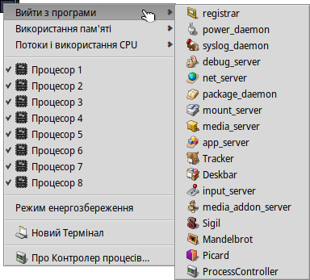
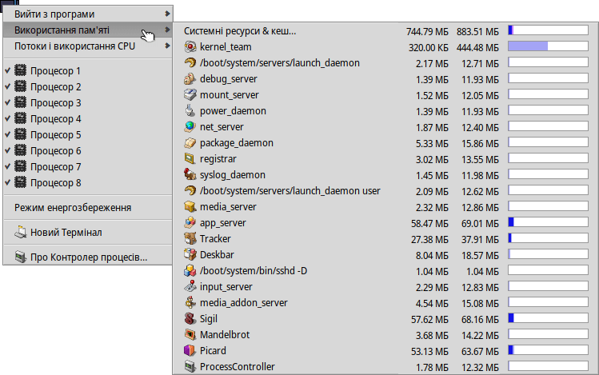

ProcessController (Контро́лер процесів)
| Deskbar: | ||
| Розташування: | /boot/system/apps/ProcessController | |
| Налаштування: | відсутні |
Основне завдання аплету ProcessController (Контро́лер процесів) – показувати активність процесора (процесорів) та обсяг використаної пам'яті. Він дозволяє відстежувати окремі процеси, змінювати їх пріоритет і завершувати виконання у разі зависання програми. У багатопроцесорних середовищах дозволяє відключати окремі процесори/ядра.
ProcessController дозволяє перевести систему у режим , за рахунок дещо збільшеної латентності.
Індикатори ліворуч показують використання кожного процесора, а панель праворуч показує споживання пам’яті. Пам'ятайте, що кількість індикаторів залежить від кількості процесорів/ядер у комп'ютері.
Якщо ProcessController ще не запущено, під час запуску Ви зможете вибрати в якому режимі буде відкрита програма: у віконному режимі чи на панелі задач Deskbar. У віконному режимі можна змінити розмір панелі, змінивши розмір вікна або використати маркер репліканта, щоб перетягнути його на робочий стіл.
Де б не було встановлено аплет, ним можна управляти за допомогою контекстного меню, яке відкривається правою кнопкою миші.
Щоб прибрати аплет з Deskbar зніміть позначку з опції у контекстному меню програми.
Вийти з програми
Щоб вийти з програми, яка виконується в системі, просто виберіть її назву у меню . Це простий спосіб закрити програму, так само як і натиснути її кнопку закриття. Однак будьте обережні, щоб не завершити системні процеси, такі як сервери чи демони. Ваша система може втратити працездатність.
Використання пам'яті
Моніторинг використання пам'яті може бути досить неточним.
Це меню дозволяє відстежувати використання пам'яті різними процесами у Вашій системі. Поруч з назвою процесу розташовано два стовпці: у першому показано обсяг пам'яті, зарезервований для запису, а у другому – всю пам'ять, включно з пам'яттю, доступною лише для читання (наприклад, бібліотеки зі спільним доступом).
Перший рядок Системні ресурси & кеш… показує загальний обсяг пам'яті, що використовується системою та всіма програмами. Довжина синьої смуги залежить від загального обсягу фізичної пам'яті Вашого комп'ютера. Наступні рядки показують пам'ять, що використовується кожним процесом. Зверніть увагу, що довжина смужки базується лише на фактично використаній частині пам'яті.
| Пам'ять, що використовується лише даною програмою (з доступом на запис) | ||
| Пам'ять, включаючи сегмент «тільки для читання» (можна використовувати спільно з іншими програмами) |
Потоки і використання CPU
Це меню дозволяє змінювати пріоритети потоків, припиняти роботу процесів або проводити їх відладку.
| Код ядра | ||
| Код користувача | ||
| Поток з холостим ходом (idle) |
На першому рівні Ви бачите назви процесів. Натиснувши на один, Ви можете припинити роботу усіх пов'язаних потоків. Темно-синя частина смужки – це час, витрачений на код ядра, світло-блакитна – на код користувача, зелена – на неактивні потоки (у режимі простою). Смужка повністю заповнена синім кольором означає, що процес використовує всю обчислювальну потужність.
Другий рівень показує окремі потоки процесу. Натиснувши на один з них, Ви можете відладити або зупинити його. Смужка, повністю заповнена синім кольором, означає, що потік прив'язаний до одного процесора/ядра.
Останній рівень меню дозволяє змінити пріоритет потоку. Будьте обережні з цим! За емпіричним правилом пріоритет потоку має бути зворотним його використанню ЦП. Тобто, чим більше він намагається отримати процесорного часу, тим нижчим має бути його пріоритет. Загалом, не переймайтеся пріоритетами програми; зверніться до її автора, це його справа.